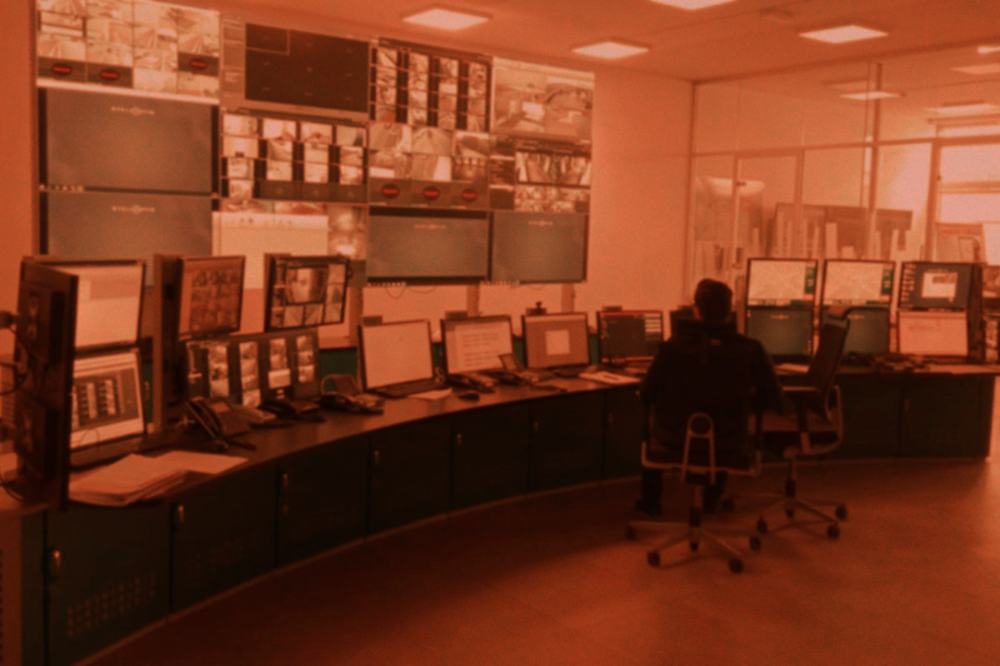

مقدمة إنّ أنظمة المراقبة والتحكم من أهم العناصر في أي عملية صناعية حديثة، حيث تشكل إحدى الركائز الرئيسية التي تمكن العمليات الصناعية الحديثة من الوصول والتحكم بجميع الأنظمة والمعدات ضمن المنشآت الصناعية، على الرغم من اتساع الرقعة الجغرافية التي تغطيها أو مدى تعقيد هذه العملية الصناعية، بهدف استمرار العمليات الصناعية وتوسعها بصورة آمنة وبكفاءة وموثوقية بمستويات عالية. ولا يخفى دورها المهم في صناعة النفط والغاز العراقية، إذ تشكل هذه الأنظمة محل اهتمام واستثمار متنامي؛ لما توفره من زيادة كفاءة الإنتاج واستقرار عملياته، مع توسع عمليات الإنتاج المستمر. ولكن كيف تطورت هذه الأنظمة؟ تخيل أننا في موقع صناعي نفطي، تعمل فيه المضخات والصمامات والخزانات ضمن عملية إنتاج مستمرة، كمحطة فصل النفط عن الماء والغاز المصاحب مثلا. هدفنا هو ضمان استمرار هذه العملية بأمان وكفاءة، وذلك في دورين أساسيَّينِ: الأول مراقبة القراءات المستَلَمة من المستشعرات المنتشرة في الموقع، كالحرارة والضغط والجريان، للتأكد من بقائها ضمن الحدود الطبيعية، والثاني التحكم بالمعدات بناءً على هذه القراءات، كفتح الصمامات وإغلاقها أو تشغيل المضخات أو تفعيل أنظمة السلامة عند الطوارئ. في الماضي كان المشغِّلون ينفذون هذين الدورين يدوياً، وكان ذلك ممكناً حين كانت المواقع صغيرةً وبسيطة. لكن مع توسع المنشآت وتزايد تعقيدها، أصبح التحكم اليدوي غيرَ عملي؛ فهو يتطلب أعداداً كبيرة من العمال المنتشرين في مناطق بعيدة، كما ارتفعت المخاطر الصناعية وأصبحت تتطلب سرعة استجابة تفوق قدرة الإنسان. من هنا نشأت أنظمة القياس عن بعد (Telemetry) لنقل القراءات إلى غرفة مركزية، ثم تطورت إلى الجيل الأول من أنظمة سكادا (SCADA) التي أضافت التحكمَ عن بعد. وفي السبعينيّات والثمانينيّات ظهرت المتحكمات المنطقية (PLC) والوحدات الطرفية (RTU)، التي مكّنت كل موقع من اتخاذ قرارات محلية فورية، بينما يبقى المركز مسؤولاً عن الإشراف الشامل وتنسيق العمل بين المواقع. لِنفهم كيف تعمل هذه الأنظمة؟ تتكوّن أنظمة التحكم الصناعي من عدد من الطبقات التي تعمل معاً لتحقيق غاية المراقبة والتحكم. سنتعرف على كل طبقة على حدة، والتكنولوجيا المستخدمة في كل طبقة ونتعرف بعدها على واقع تكنولوجيا التحكم الصناعي في منشآت العراق النفطية والغازية. الطبقة الأولى: المعدات الحقلية (Field Devices & Instrumentation) تتكون هذه الطبقة من الحساسات (Sensors) لقياس المتغيرات الرئيسية مثل الضغط ودرجة الحرارة ومعدلات الجريان، ومن المشغلات (Actuators) الميكانيكية أو الكهربائية أو الهوائية مثل الصمامات. وتُنقلُ البيانات في هذه الطبقة بشكل إشارات كهربائية تياراً أو جهداً، أو عبر بروتوكولات خاصة مثل (HART) أو (FieldBus). الطبقة الثانية: التحكم المباشر (Direct Field Control) تمثل هذه الطبقة عقل المنظومة الذي يقرأ الإشارات القادمة من المعدات الحقلية ويتخذ القرار بأجزاء من الثانية. وتكنولوجيا هذه الطبقة تتكوّن من المتحكمات المنطقية القابلة للبرمجة (PLC)، حيث تُستخدَم للتحكم السريع والمحلي مثل تشغيل مضخة أو إغلاق صمام بناءً على شرطٍ برمجي معيَّن، وأيضاً من الوحدات الطرفية (RTU) التي تستخدم في المواقع النائية مثل خطوط الأنابيب الممتدة لمئات الكيلومترات حيث تستهلك طاقةً أقل وتتحمل ظروفاً بيئيةً قاسيةً جداً وتدعم الاتصال اللاسلكي أو عبر الأقمار الصناعية. الطبقة الثالثة: الإشراف والتحكم عن بعد (Supervisory Control) تمثل هذه الطبقة واجهة المستخدم التي تُمكن المشغل من التحكم ومراقبة عمليات المنشأة والمعدات عن بعد من غرف السيطرة. وتتكون من أنظمة التحكم الإشرافي وجمع البيانات (SCADA) وشاشات التشغيل والعرض المحلية (HMI). وتكمن وظيفة هذه الطبقة بجمع البيانات القادمة من المتحكمات (PLCs) والوحدات الطرفية (RTUs) وعرضها أمام المشغلين في غرفة التحكم والسيطرة مع إدارة أنظمة الإنذارات. الطبقة الرابعة: إدارة العمليات الصناعية (Manufacturing Operations Management) وهي الطبقة التي تربط التكنولوجيا التشغيلية (OT) مع أنظمة إدارة الأعمال والمعلومات (IT). وتتكون من أنظمة التنفيذ الصناعية (MES) ومؤرشفات البيانات التاريخية (Data Historian). وتهدف هذه الطبقة إلى تخزين كل قراءة تخرج من الحقل أو المنشأة الصناعية لسنوات بهدف تحليل الأداء وتتبع الإنتاج وحساب كفاءة المعدات. الطبقة الخامسة: طبقة الأمان التشغيلي (Safety Instrumented Systems SIS) وهي طبقة موازية لمنظومة التحكم الصناعي. تمثل خط الصد الأخير في حال حدوث خطأ تشغيلي، ولم تستطع أنظمة التحكم تلافيه بصورة آمنة، حيث تعمل هذه الطبقة على تفعيل إجراءات الإطفاء الاضطراري للمنشأة (Emergency Shutdown ESD). ولكن أين أنظمة التحكم الموزع (DCS)؟ في الحقيقية، فإن أنظمة التحكم الموزع (DCS) ليست معدة أو تقنية منفردة تقع ضمن طبقة معينة دون غيرها، فهي تمثل نظاماً وبيئةَ تحكمٍ متكاملةً تمتد عبر جميع هذه الطبقات ضمن حزمة تكنولوجيا مدمجة واحدة. الواقع العراقي حتى نفهمَ واقع تكنولوجيا التحكم الصناعي في العراق من ناحية المعدات والأنظمة المستخدمة ومدى تطورها، علينا أولاً أن نفهم النموذج التشغيلي العراقي. يتمثل النموذج العراقي بعقود الخدمة الفنية (TSC) وبحسب هذه النوعية من العقود فإن الحقول العراقية أو المنشأة التي تقع ضمن هذه العقود تعملُ وفق التقنيات والمعايير التي تدخلها الشركات الدولية الكبرى الرابحة بهذه العقود، مثل الشركة البريطانية للبترول (BP) أو شركَتَي (Shell) أو (Eni) أو غيرهما من الشركات العالمية، فهذه الشركات عملياً هي من تُدخلُ تقنيات التحكم الصناعي وحزَمَه وأنظمتَه مع المواصفات التي تعمل بها هذه الشركات للمواقع التي تقع ضمن عملياتها بحسب العقد، وبإشراف الشركات والجهات الوطنية، ولكن لا يوجد معيار تقني عراقي موحد؛ حيث تختلف الأنظمة باختلاف الشركات والمواقع. وهنالك ثلاث فئات رئيسية تقريباً تلخص الواقع التكنولوجي لأنظمة التحكم الصناعي في العراق: الفئة الأولى: المنشآت الحديثة التي تستخدم بيئات (DCS) أو (SCADA) متكاملة، وتمثل الفئة الأكبر من المنشآت الصناعية النفطية والغازية في العراق، مثل حقول الرميلة ومجنون والزبير وحقل غرب القرنة وحلفاية، حيث تستخدم أنظمة (DCS) حديثة ومتطورة ، بالإضافة لأنظمة (SCADA) متطورة لمراقبة الآبار والتحكم بها عن بعد. الفئة الثانية: المنشآت الوطنية القديمة تعتمد أنظمةً هجينة، حيث تم تحديث أنظمة التحكم القديمة بأنظمة أكثر تطوراً لكن بصورة هجينة، لِتَعملا معاً بكفاءة أكثر، مثل المصافي القديمة، مثل مصفاة الدورة في أو الأجزاء القديمة من مصفى الشعيبة في البصرة ومحطات العزل القديمة. تحولت هذه الأنظمة إلى أنظمة (DCS) أو (PLC) بالكامل أو بصورة جزئية. الفئة الثالثة: الخطوط الناقلة ومحطات الضخ بالنسبة لشبكة الأنابيب الممتدة لنقل النفط والغاز، فتعتمد بشكل كامل على وحدات (RTUs) المتصلة بنظام (SCADA) مركزي للمراقبة وكشف التسريبات والتحكم بصمامات العزل على طول الخطوط. التوجه الحديث اليوم يتجه التحكم الصناعي نحو معالجات ميدانية أقوى وأجهزة (RTU) و(PLC) أكثر ذكاءً، إلى جانب الحوسبة الطرفية (Edge Computing) التي تعالج البيانات قرب المستشعرات مباشرة لتقليل التأخير وتخفيف الحمل عن الشبكة. هذا الهاردوير المتطور يتكامل مع إنترنت الأشياء الصناعي والسحابة، مع دعم برمجي للذكاء الاصطناعي والتوائم الرقمية، و أمن سيبراني أقوى لحماية هذه البنية المترابطة. يمثل هذا المقال استعراضاً تعريفياً لأنظمة التحكم والمراقبة الصناعية (ICS) من معماريتها إلى واقع تكنولوجيا التحكم الصناعي في العراق. لمزيد من التفاصيل والمعلومات التقنية المفصلة التي لا يسعنا إضافتها في هذا المقال لكي لا نطيله أكثر أو نجعله متعددَ الأجزاء يمكنكم مراسلتنا مباشرة عن طريق تطبيق التيليجرام على البوت @AL_Hythem_bot
